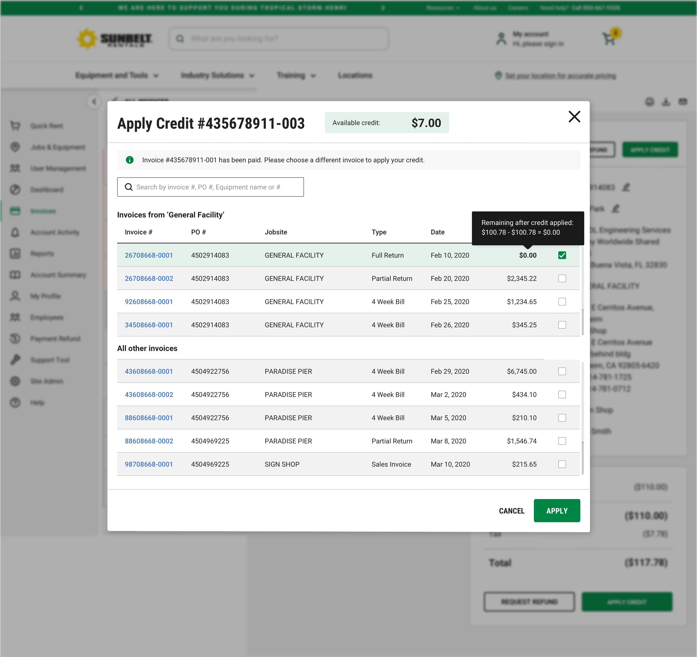

Sunbelt Rentals: Invoicing
Introduction
Role
-
Lead Product Designer
Tools
-
Dovetail
-
Miro
-
Lookback
-
Google Analytics
-
Marvel
-
Sketch
-
Research
Deliverables
-
Competitive Analysis
-
Content Strategy
-
User Flows
-
Final Designs
-
Prototype
-
Specifications
-
User Testing
Duration
-
6 months
The Problem
SUNBELT RENTALS
At Sunbelt Rentals, much of the business is still done over the phone, from ordering to managing their equipment rentals and invoices. Our goal for this section was to increase online payments by 20% and decrease time to task for finding invoices by 50%.
THE USERS
Users were opting out of paying online because their invoices were incorrect and they were due a credit which required a phone call in order to apply. The users that did use the online platform, were unable to download or view an invoice. The balance information displayed at the top of their screen was incorrect and confusing.
The Solution
We allowed for credit to be applied to an invoice. In the case where the invoice was already paid, we gave the option of applying these credits to another open invoice or requesting a refund. We made it easy to view and download invoices in order to encourage online payments. Incorrect data was removed, and valid, helpful data was placed at the top. Users were never left at a dead end, while new live search and filtering options helped them find their way.
50% decrease in time to task
50% increase in online payment
Discovery
USER INTERVIEWS
Behavior
Users look at multiple unpaid and past due invoices in one visit, making all of their payments at one time. Users want to see their current overall standing of how much they owe Sunbelt.
Search
Users need the ability to search by PO number, Job Site, and Invoice number. Users didn’t realize the old search was applying a filter and had trouble finding clearing it
Payment
Users hold off on making payments because they are due a credit that wasn’t applied to their invoice.
Download
Users don’t know how to download an invoice so they will wait until they receive the invoice via mail to pay.
Rent Again
Users also look through invoices in order to find specific equipment they’d like to rent again.
Users would like both options of either emailing multiple invoices as one document or separate documents.
BASELINE USABILITY TESTING
- Data at the top isn't accurate, takes up half of the screen, and confuses users.
- Users don't know they can click the invoice number to open the invoice, will wait until the invoice arrives via mail. This keeps them from paying online.
- Users don’t know they can customize their view by editing the columns shown.
- Filters on the columns are difficult to use, which leaves users not able to filter their data.
- The tab menu is often overlooked so it's difficult to look at paid and unpaid invoices.
Before: Invoicing
Before: Invoicing
Information Architecture
USER FLOWS
Finding an invoice is the first step to making a payment. In order to improve this process, I looked at our current flows and redesigned the pathways that would help users locate the invoices they were looking for. The payment flows themselves had already been designed and mapped out with a previous project.
To wrap up my discovery phase, I put together a quick content strategy to guide my design hierarchy and structure. Once this was complete, I went straight into high fidelity mockups using our new design component library which I made updates to throughout the redesign.
Visual Design
FIRST ITERATION
For the first version of the invoicing section, I incorporated everything I had learned from the discovery phase: information hierarchy, overall balance, live search, downloading and emailing invoices, easy filtering, applying credit, compressed table state to allow for easy navigation.
Invoice Table

Date Picker

Invoice Detail Page & Compressed Table

Credit Memo: Open Invoice

Credit Memo: Closed Invoice
Credit Memo: Apply to alternative invoice
Credit Memo: Applying to multiple invoices
USABILITY TESTING
After receiving feedback from the design team and stakeholders, I was ready to put the prototype through usability testing. In order to optimize my time and get an unbiased moderation, someone from my team conducted the testing sessions while another teammate recruited the participants. Below are some example tasks from the testing.
- Find an open invoice from a specific date.
- Find all invoices from a previous month not within their view.
- Pay all outstanding invoices.
- Pay the 2 oldest, outstanding invoices.
- Change PO# on the most recent invoice.
- Apply a credit memo.
USER FINDINGS
- Invoice doesn’t look like an official invoice.
- Users were leaning in to read some of the text (too small).
- The PO# didn’t stand out.
- Users didn’t want a rental duration, instead they wanted a rental start date and end date.
- The main CTA at the top, ‘Pay Statement’, was confusing and didn’t come across as intended.
- Inline editing of the PO# on the table wasn’t very obvious.
- Credit memos weren’t standing out on the table compared to the other invoices.
- Users stated that they would like the date column to show the issue date instead of the due date.
- Overall, 6/6 users were happy with the new direction.
FINAL ITERATION
From the final designs shown, you can see that changes were implemented in order to accommodate this feedback.
- ‘Pay Statement’ was changed to ‘Pay Balance’.
- Text size was increased from 14px to 16px on the invoices.
- Rental duration was changed to show a rental start and end date.
- The hover state of the PO# on the table was updated to pop up whenever hovering on the row. This is also solved for on the live version which would be much more interactive than the prototype.
- Credit memos were given an updated status to show an alert icon as well as the word ‘Unapplied’ to draw attention to these invoices. They also have a different CTA of ‘Apply’.
- The date column remained the same, but the data we pulled for the column was updated in the Jira ticket to be the preferred ‘Issued Date’.
Reflections
- The new feature that allows users to apply a credit has not yet been implemented. It has taken some time to work with the financial team and get properly set up to push this new feature. I’ve realized that we really should have pushed for these discussions when first accessing the research and determining the need. We may still not be ready to push it live, but it would put us a month or two ahead of the current schedule. While moving into this next section of redesign, I’ve made sure to discuss big feature changes with all stakeholders very early on.
- With the short amount of time, we had to fully concentrate on the external, customer users. Given more time, I’d like to look at how we could create an employee version. Oftentimes, sales reps or customer service reps are looking at a customer’s account to help them manage their account. There is a potential to supply them with important details that may help build a better relationship, gain an increase in sales, and better retain customers.
- This first section on the product roadmap was redesigned very quickly in order to speed up the timeline. This meant less time working with stakeholders and developers. Developers really needed more communication and development research time for new feature additions. In the next section of the product roadmap, I was able to have collaboration with stakeholders and developers so they could be very well prepared for the next section’s development.